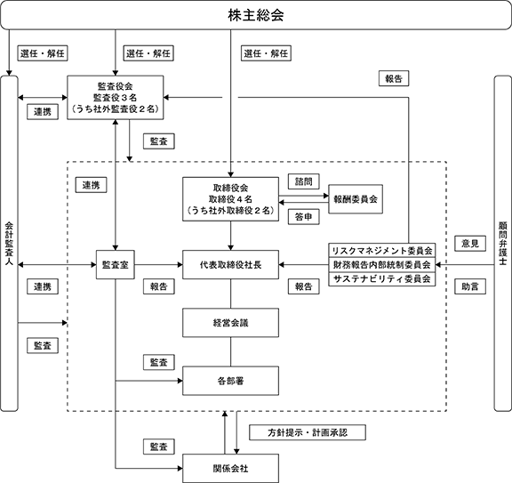

(注) Ａ種優先株式の内容は次のとおりであります。
(1) 優先配当
ア 当社は、剰余金の配当を行うとき(配当財産の種類を問わない。)は、当該配当に係る基準日の最終の株主名簿に記載又は記録されたＡ種優先株式を有する株主(以下「Ａ種優先株主」という。)又はＡ種優先株式の登録株式質権者(以下「Ａ種優先登録株式質権者」という。)に対し、同日の最終の株主名簿に記載又は記録された普通株式を有する株主(以下「普通株主」という。)又は普通株式の登録株式質権者(以下「普通登録株式質権者」という。)に先立ち、Ａ種優先株式１株につき、Ａ種優先株式の１株あたりの払込金額1,000,000円(以下「Ａ種配当基準額」という。)及び前事業年度に係る配当後のＡ種累積未払配当金(後記イにおいて定義される。)の合計額に対し、Ａ種優先配当年率を5.5％として、当該基準日が属する事業年度の初日(同日を含む。)から当該配当の基準日(同日を含む。)までの期間につき月割計算(但し、１か月未満の期間については年365日の日割計算とし、１円未満の端数は、四捨五入するものとする。)により算出される額(以下「Ａ種優先配当金」という。)の配当をする(以下「Ａ種優先配当」という。)。但し、既に当該事業年度に属する日を基準日とするＡ種優先配当を行ったときは、かかる配当済みのＡ種優先配当の累積額を控除した額をＡ種優先配当として支払う。
イ 累積
Ａ種優先株式発行事業年度以降のある事業年度におけるＡ種優先株式１株あたりの剰余金の配当の額がＡ種優先配当金の額に達しないときは、Ａ種優先株式１株あたりの不足額(以下「Ａ種累積未払配当金」という。)は翌事業年度以降に累積する。当社は、Ａ種累積未払配当金がある場合に剰余金の配当を行うとき(配当財産の種類を問わない。)は、Ａ種優先株主又はＡ種優先登録株式質権者に対し、上記アに基づくＡ種優先株主又はＡ種優先登録株式質権者に対する剰余金の配当及び普通株主又は普通登録株式質権者に対する剰余金の配当に先立ち、Ａ種優先株式１株につき、Ａ種累積未払配当金を剰余金の配当として支払う。
ウ 非参加
当社は、Ａ種優先株主又はＡ種優先登録株式質権者に対し、上記ア及びイに基づく剰余金の配当以外に剰余金の配当を行わない。
エ Ａ種配当基準額の調整
Ａ種配当基準額は、次に定めるところに従い調整する。
① Ａ種優先株式の分割又は併合が行われたときは、Ａ種配当基準額は、次のとおり調整する。なお、「分割・併合の比率」とは、株式分割又は株式併合後のＡ種優先株式の発行済株式総数を株式分割又は株式併合前のＡ種優先株式の発行済株式総数で除した数をいい、以下同様とする。
② Ａ種優先株主に割当てを受ける権利を与えて株式の発行又は処分(株式無償割当てを含む。)を行ったときは、Ａ種配当基準額は、次のとおり調整する。なお、次の算式中の「既発行Ａ種優先株式数」は、当該発行又は処分の時点で当社が保有する自己株式(Ａ種優先株式に限る。)の数を控除した数とし、自己株式を処分する場合には、次の算式中の「新発行Ａ種優先株式数」は、「処分する自己株式(Ａ種優先株式に限る。)の数」と読み替えるものとする。
③ ①及び②に基づく調整後Ａ種配当基準額の算出において発生する１円未満の端数は、四捨五入するものとする。
(2) 残余財産の分配
ア 当社は、残余財産の分配をするときは、Ａ種優先株主又はＡ種優先登録株式質権者に対し、普通株主又は普通登録株式質権者に先立ち、Ａ種優先株式１株につき、次の①及び②を合計した額(以下「Ａ種残余財産分配額」という。)を残余財産の分配として支払う。
① Ａ種配当基準額
② Ａ種累積未払配当金
イ 非参加
当社は、Ａ種優先株主又はＡ種優先登録株式質権者に対して、Ａ種残余財産分配額を超えて残余財産の分配を行わない。
(3) 議決権
Ａ種優先株主は、法令に別段の定めのある場合を除き、すべての株主を構成員とする株主総会において議決権を有しないものとし、Ａ種優先株主を構成員とする種類株主総会において、Ａ種優先株式１株につき１個の議決権を有する。
(4) 金銭を対価とする取得請求権(償還請求権)
Ａ種優先株主は、いつでも、当社に対して金銭の交付と引換えに、その保有するＡ種優先株式の全部又は一部を取得することを請求することができるものとし、当社は、当該Ａ種優先株主に対し、Ａ種優先株主が取得の請求をしたＡ種優先株式を取得するのと引換えに、Ａ種優先株式１株につき、Ａ種配当基準額及びＡ種累積未払配当金の合計額を交付するものとする。
(5) 普通株式を対価とする取得請求権(転換請求権)
Ａ種優先株主は、いつでも、当社に対して、その保有するＡ種優先株式の全部又は一部を取得することを請求することができるものとし、当社は、当該Ａ種優先株主に対し、Ａ種優先株主が取得の請求をしたＡ種優先株式を取得するのと引換えに、以下に定める数の当社の普通株式を交付するものとする。
ア 取得と引換えに交付する普通株式の数
(a) Ａ種優先株式を取得するのと引換えに交付すべき普通株式の数は、次のとおりとする。
(b) Ａ種優先株式の取得と引換えに交付する普通株式の数に１株に満たない端数があるときは、これを切り上げるものとし、この場合においては、１株を交付する。
イ 当初取得価額
取得価額は、当初、109円とする。
ウ 取得価額の調整
(a) 以下に掲げる事由が発生した場合には、それぞれ以下のとおり取得価額を調整する。
① 普通株式につき株式の分割又は株式無償割当てをする場合、次の算式により取得価額を調整する。なお、株式無償割当ての場合には、以下の算式における「分割前発行済普通株式数」は「無償割当て前発行済普通株式数(但し、その時点で当社が保有する普通株式を除く。)」、「分割後発行済普通株式数」は「無償割当て後発行済普通株式数(但し、その時点で当社が保有する普通株式を除く。)」とそれぞれ読み替える。
調整後の取得価額は、株式の分割の場合には株式の分割に係る基準日の翌日以降、また株式無償割当ての場合には株式無償割当ての効力が生ずる日をもって(無償割当てに係る基準日を定めた場合は当該基準日の翌日以降)、これを適用する。
② 普通株式につき株式の併合をする場合、株式の併合の効力が生ずる日をもって(株式の併合に係る基準日を定めた場合は当該基準日の翌日以降)、次の算式により取得価額を調整する。
③ 調整前の取得価額を下回る金額をもって普通株式を発行又は当社が保有する普通株式を処分する場合(株式無償割当ての場合、普通株式の交付と引換えに当社に取得される株式若しくは新株予約権(新株予約権付社債に付されたものを含む。以下本③において同じ。)の取得による場合、普通株式を目的とする新株予約権の行使による場合又は合併、株式交換、株式交付若しくは会社分割により普通株式を交付する場合を除く。)、次の算式(以下「取得価額調整式」という。)により取得価額を調整する。調整後の取得価額は、払込期日(払込期間を定めた場合には当該払込期間の最終日)の翌日以降、また、株主への割当てに係る基準日を定めた場合は当該基準日(以下「株主割当日」という。)の翌日以降これを適用する。なお、当社が保有する普通株式を処分する場合には、次の算式における「新たに発行する普通株式の数」は「処分する当社が保有する普通株式の数」、「当社が保有する株式の数」は「処分前において当社が保有する普通株式の数」とそれぞれ読み替える。
④ 当社に取得をさせることにより又は当社に取得されることにより、調整前の取得価額を下回る価額をもって普通株式の交付を受けることができる株式を発行又は処分する場合(株式無償割当ての場合を含む。)、係る株式の払込期日(払込期間を定めた場合には当該払込期間の最終日。以下本④において同じ。)に、株式無償割当ての場合にはその効力が生じる日(株式無償割当てに係る基準日を定めた場合は当該基準日。以下本④において同じ。)に、また株主割当日がある場合はその日に、発行又は処分される株式の全てが当初の条件で取得され普通株式が交付されたものとみなし、取得価額調整式において「１株あたり払込金額」として係る価額を使用して計算される額を、調整後の取得価額とする。調整後の取得価額は、払込期日の翌日以降、株式無償割当ての場合にはその効力が生ずる日の翌日以降、また株主割当日がある場合にはその日の翌日以降、これを適用する。
⑤ 行使することにより又は当社に取得されることにより、普通株式１株あたりの新株予約権の払込価額と新株予約権の行使に際して出資される財産の合計額が調整前の取得価額を下回る価額をもって普通株式の交付を受けることができる新株予約権を発行する場合(新株予約権無償割当ての場合を含む。)、係る新株予約権の割当日に、新株予約権無償割当ての場合にはその効力が生ずる日(新株予約権無償割当てに係る基準日を定めた場合は当該基準日。以下本⑤において同じ。)に、また株主割当日がある場合はその日に、発行される新株予約権全てが当初の条件で行使され又は取得されて普通株式が交付されたものとみなし、取得価額調整式において「１株あたり払込金額」として普通株式１株あたりの新株予約権の払込金額と新株予約権の行使に際して出資される財産の合計額を使用して計算される額を、調整後の取得価額とする。調整後の取得価額は、係る新株予約権の割当日の翌日以降、新株予約権無償割当ての場合にはその効力が生ずる日の翌日以降、また株主割当日がある場合にはその日の翌日以降、これを適用する。
(b) 上記(a)に掲げた事由によるほか、下記①及び②のいずれかに該当する場合には、当社はＡ種優先株主及びＡ種優先登録株式質権者に対して、あらかじめ書面によりその旨並びにその事由、調整後の取得価額、適用の日及びその他必要な事項を通知したうえ、取得価額の調整を適切に行うものとする。
① 合併、株式交換、株式交付、株式移転、会社分割のために取得価額の調整を必要とするとき。
② 前①のほか、普通株式の発行済株式の総数(但し、当社が保有する普通株式の数を除く。)の変更又は変更の可能性を生ずる事由の発生によって取得価額の調整を必要とするとき。
(c) 取得価額の調整に際して計算が必要な場合は、円単位未満小数第１位まで算出し、その小数第１位を四捨五入する。
(d) 取得価額の調整に際して計算を行った結果、調整後取得価額と調整前取得価額との差額が１円未満にとどまるときは、取得価額の調整はこれを行わない。
(6) 金銭を対価とする取得条項(強制償還)
当社は、いつでも、取締役会が別に定める日の到来をもって、Ａ種優先株式の全部を取得することができるものとし、当社は、Ａ種優先株式を取得するのと引換えに、当該Ａ種優先株主に対して、Ａ種優先株式１株につき、Ａ種配当基準額及びＡ種累積未払配当金の合計額に相当する額の金銭を交付するものとする。この場合、当社は、当該取締役会の開催日の30日前までに、当該Ａ種優先株主に対して、Ａ種優先株式の取得を予定している旨及び取得を予定しているＡ種優先株式の数を通知する。
(7) 株式の併合又は分割等
当社は、株式の併合若しくは分割をするとき、募集株式若しくは募集新株予約権の割当てを受ける権利を与えるとき、又は株式無償割当て若しくは新株予約権無償割当てをするときは、Ａ種優先株式につき、普通株式と同時に同一の割合でこれを行う。
(8) 譲渡制限
譲渡によるＡ種優先株式の取得については、当社取締役会の承認を要する。
※ 当連結会計年度の末日（2024年２月20日）における内容を記載しております。提出日の前月末現在（2024年４月30日）において、記載すべき内容が当連結会計年度の末日における内容から変更がないため、提出日の前月末現在に係る記載を省略しております。
(注) １．新株予約権１個につき目的となる株式数は、100株であります。
ただし、新株予約権の割当日後、当社が株式分割、株式併合を行う場合は、次の算式により付与株式数を調
整、調整の結果生じる１株未満の端数は、これを切り捨てる。
その他、目的となる株式数の調整を必要とする事由が生じたときは、当社は取締役会決議により、合理的な
範囲で目的となる株式数を適宜調整するものとする。
２．本新株予約権については、自己株式を充当するため、新株予約権の行使により株式を発行する場合の資本組
入額は０円であります。
該当事項はありません。
③ 【その他の新株予約権等の状況】
該当事項はありません。
該当事項はありません。
(注）１．有償第三者割当
発行価格 1,000,000円
資本組入額 500,000円
割当先 近畿中部広域復興支援投資事業有限責任組合
２．会社法第447条第１項及び第３項並びに第448条第１項及び第３項の規定に基づき、2022年６月30日付でＡ種優先株式の払込に伴う資本金及び資本準備金増加分の全部をそれぞれ減少し、その他資本剰余金へ振り替えております。
① 普通株式
2024年２月20日現在
（注）自己株式24,577株は、「個人その他」に245単元、「単元未満株式の状況」に77株を含めて記載しております。
② Ａ種優先株式
2024年２月20日現在
所有株式数別
2024年２月20日現在
（注）１．2022年６月に発行したＡ種優先株式が含まれております。
２．Ａ種優先株式を有する株主は、当社の株主総会における議決権を有しておりません。
所有議決権数別
2024年２月20日現在
2024年２月20日現在
（注）「単元未満株式」欄の普通株式には、当社所有の自己株式 77株が含まれております。
2024年２月20日現在
会社法第155条第７号による普通株式の取得
該当事項はありません。
該当事項はありません。
（注）当期間における取得自己株式には、2024年４月21日から有価証券報告書提出日までの単元未満株式の買取による株式数は含めておりません。
（注）当期間における保有自己株式には、2024年４月21日から有価証券報告書提出日までの単元未満株式の買取による株式数は含めておりません。
当社グループは、株主の方々に対する利益還元を経営の最重要政策の一つと位置づけております。配当の決定機関は、中間配当は取締役会、期末配当は株主総会であります。当社グループの利益配分に対する基本方針は、将来の事業拡大のための投資と経営体質強化のための内部留保の確保とのバランスを総合的に判断し、機動的な配当政策を行うこととしております。なお、当社グループは会社法第454条第５項に規定する中間配当が出来る旨を定款に定めております。しかしながら、当連結会計年度におきましては、健全な財務体質への回復を優先すべきと判断し、2024年３月29日に開示しました「2024年２月期 決算短信（日本基準）（連結）」のとおり、誠に遺憾ながら配当を見送らせていただくことといたしました。継続的な事業成長を実現し、出来るだけ早期に株主の皆様への安定的な配当を実施させていただけるよう努めてまいります。
なお、Ａ種優先株式につきましては、定款第10条２の定めにより、当社は、剰余金の配当を行なうときは、当該配当に係わる基準日の最終の株主名簿に記載又は記録されたＡ種優先株式を有する株主又はＡ種優先株式の登録株式質権者に対し、同日の最終の株主名簿に記載又は記録された普通株式を有する株主又は普通株式登録株式質権者に先立ち、Ａ種優先株１株につき、Ａ種優先株の１株当たりの払込金額1,000,000円及び前事業年度に係る配当後のＡ種累積未払配当金の合計額に対し、Ａ種優先配当年率を5.5％として算出される額の配当をすることとしております。Ａ種優先株式の配当
① コーポレート・ガバナンスに関する基本的な考え方
当社グループは、コーポレート・ガバナンスを重要な経営課題の一つと認識し、下記の基本方針のもと、経営の透明性の確保と、経営の意思を確実に伝達させるための組織体制の整備と維持に全力を傾けております。
・経営環境の変化に迅速に対応できる経営管理組織体制の構築・・・経営環境の激しい変化に対応すべく、適宜 組織改編を行い迅速な意思決定が出来る組織体制を構築しております。
・コンプライアンス重視・・・法令遵守は企業の根幹であるという考えのもと、コンプライアンス体制を確保す るための諸施策の実施並びに社内監査の強化を図っております。
② 企業統治の体制
a 企業統治の体制の概要及びその体制を採用する理由
当社では監査役会設置会社を採用し、取締役会及び監査役会を設置しております。
(取締役会)
取締役会は、社外取締役２名を含む取締役５名で構成され、代表取締役社長が議長を務め、当社グループ全体の経営意思決定の最高機関として重要事項を審議・決議しております。社外監査役２名を含む監査役３名は、各々独立した立場で取締役会に出席し、取締役の業務執行における善管注意義務、忠実義務等の履行状況について監査する体制を構築しております。
当事業年度における個々の取締役の出席状況については次のとおりであります。
取締役会における主な決議事項は、次のとおりであります。
・株主総会の招集及び株主総会に付議する議案
・期末・中間配当に関する議案
・役員の人事に関する事項
・年度事業計画の策定
・定款他重要規程等の改訂等
（任意の報酬委員会）
取締役の報酬に関する手続きの公平性・透明性・客観性を確保し、コーポレート・ガバナンスの充実を図るため、取締役会の諮問機関として、代表取締役社長及び社外取締役２名からなる任意の報酬委員会を設置しております。なお、報酬委員会の委員長は、代表取締役社長を選定することとしております。
当事業年度における個々の取締役の出席状況については次のとおりであります。
報酬委員会おける主な決議事項は、次のとおりであります。
・取締役の報酬額等
当社のコーポレートガバナンスの体制図は次の通りであります。

（当該企業統治の体制を選択している理由）
当社は、企業体質の強化・経営体制の確立に向けて、組織・制度・決議機関等を整備し、コーポレート・ガバナンスの充実を図ることが重要であると認識しております。
社外取締役２名及び社外監査役２名を選任し、経営監視機能が有効に働くことにより、透明性、客観性、健全性が十分確保された企業統治体制が確立できると考え、このような体制をとっております。
b 内部統制システム整備の状況
内部統制システムについては、取締役会にて決議している「内部統制システム構築の基本方針」に基づき、 法令の遵守、業務執行の適正性、効率性を確保するために、その体制を以下のとおり整備しております。
取締役等及び従業員の職務の執行が法令及び定款に適合することを確保するための体制
・当社は、企業理念、経営指針、パレモ信条をグループの行動規範とし、法令・定款及び社会的規範を遵守し、適法かつ公正な企業活動の推進に努める。また職務の執行にあたり遵守すべき規範を「企業倫理基準」として定め、取締役及び執行役員（以下、取締役等という）並びに従業員に対し周知する。従業員が業務上遵守すべきルールは、取締役会の承認を得た基本規程を基に業務を所管する各部署が規則・業務マニュアルとして定めその徹底を図る。
・当社は、グループ全体のリスク管理を統括する機関として、当社の取締役社長を委員長とする「リスクマネジ メント委員会」を設置し、当社及びグループ各社のコンプライアンス推進のための活動・教育を実施する。取締役社長直轄の監査室は、コンプライアンス関連規程の遵守状況について、当社及びグループ各社に対し定期及び特別監査を実施し、取締役社長及び担当取締役に報告する。
・当社及びグループ各社は、コンプライアンス上疑義がある行為について、通報を受け付ける社内通報制度（ヘルプライン）を従業員及び取引先に対し設置する。通報受付部署を当社の総務人事部とし、通報内容に対し迅 速な調査・対応を行なうとともに、法令・ルール違反には、当社及びグループ各社の社内規程に基づき厳正に対処する。
・取締役等は、重大な法令違反、その他コンプライアンスに関する重要な事実が発生した場合には、直ちに監査 役に報告するとともに取締役会に報告し、不適合の是正を行なう。
・監査役は、取締役の職務の執行が法令及び定款に適合しているか監査し、監査機能の実効性の向上に努める。
・当社及びグループ各社は、反社会的勢力を排除し、関係を遮断するために、警察、弁護士等の外部機関、業界との連携強化を図り、組織としての対応に努める。
取締役の職務の執行に係わる情報の保存及び管理に関する体制
・当社及びグループ各社は、株主総会議事録、取締役会議事録、その他取締役の職務の執行に係わる情報は、文書(電磁的記録を含む)に記録し、文書管理規程に基づき適切に保存・管理する。また取締役及び監査役は、常時これらの文書を閲覧できる。
損失の危険の管理に関するその他の体制
・当社は、グループ全体のリスクの発生の阻止・低減及びリスク発生時の的確なリスク管理体制の構築を目的にリスクマネジメント基本規程」等のリスク管理規則を定める。
・当社及びグループ各社は、リスクマネジメント委員会にて、グループ全体のリスク（経営、事故・災害、コンプライアンス）の把握を行なうとともに、リスクの回避・低減のための対策の実施、監視及び改善等の活動する。
・当社は、グループ全体の不測事態の発生には、リスク管理規程に基づき担当取締役の指揮のもと、迅速かつ、適切な対応を行なう。
取締役の職務の執行が効率的に行なわれることを確保するための体制
・当社は、経営の的確かつ機動的な意思決定を行なうため、取締役会のほか、当社及びグループ各社の社長、取締役、執行役員、監査役及び部長で構成する経営会議を毎月１回開催し、業務執行上の重要事項について、報告・検討を行なう。
・取締役会は、「職務分掌規程」、「職務権限規程」並びに「申請手続規程」を定め、適切かつ効率的に職務の執行が行なわれる体制を構築する。
当社及び子会社から成る企業集団における業務の適正を確保するための体制
子会社の取締役等の職務の執行に係る事項の当該会社への報告に関する体制
・当社は、グループ経営の効率化と企業集団としての健全な発展を目的に「関係会社管理規程」を定め、グループ各社で共有し、かつ企業集団経営に必要な規程類を整備する。また「関係会社管理規程」においてグループ各社の株主総会付議事項及びその他重要事項について、当社に報告または承認を得ることを定め、グループ各社に義務づける。
・当社は、グループ各社の決算書、事業計画等に関する報告書を半期毎に作成し、当社取締役会に報告する。
・当社は、グループ各社の社長に対する面談を必要に応じて実施し、グループ経営方針の確認、各社の経営状況の把握、その他グループの重要課題の検討を行なう。
子会社の損失の危険の管理に関する規程その他の体制
・当社は、当社及びグループ各社のリスク発生の阻止・低減、及びリスク発生時の的確な対応を可能とすることを目的に、「リスクマネジメント基本規程」等のリスク管理規程を定め、リスク管理体制を構築する。またグループ各社に対し、当社の「リスクマネジメント基本規程」等のリスク管理規程を周知徹底させ、当社に準じた社内規程をグループ各社に整備させる。
・当社は、グループ各社を含めたリスク管理を統括する機関として、当社に取締役社長を委員長とする「リスクマネジメント委員会」を設置する。またグループ各社におけるリスクの発生時には、「危機管理マニュアル」に基づき緊急対策本部を設置し、被害を最小限に抑えるため、迅速かつ適切な対応を行なう。
子会社の取締役等の職務の執行が効率的に行なわれることを確保するための体制
・当社は、「関係会社管理規程」において、グループ各社の株主総会付議事項その他重要事項について、当社に報告または承認を得ることを定め、グループ各社に義務づける。
・当社は、グループ各社の社長に対する面談を必要に応じて実施し、グループ経営方針の確認、各社の経営状況の把握、その他グループの重要課題の検討を行なう。
・当社は、グループ各社における経営の的確かつ機動的な意思決定を行なうため、取締役会のほかに、経営会議等の会議を定期的に開催し、業務執行上の重要事項について報告・検討を行なう。また、各社における職務分掌、職務権限並びに決裁権限に関する規定を定め、適切かつ効率的に職務の遂行が行なわれる体制を構築する。
子会社の取締役等及び従業員の職務の執行が法令及び定款に適合することを確保するための体制
・当社は、企業理念、経営指針、パレモ信条等のグループ行動規範を、グループ各社の取締役等及び従業員へ周知する。
・当社は、グループの全従業員を対象とする、コンプライアンス上疑義がある行為について、通報を受け付ける社内通報制度（ヘルプライン）を設置し、当社及びグループ各社のコンプライアンス体制を推進する。
・当社は、グループ各社に取締役及び監査役を派遣し、グループ各社の取締役会等の主要な会議に出席させ、グループ各社の経営状況等の把握を行なう。
・当社の総務人事部は、グループ各社の内部統制を含めて管理・監督する。また社長室は、グループ各社の業績管理や業務状況の確認、必要に応じた改善を行ない、必要に応じて、定期的に取締役会、経営会議へ報告することとする。また監査室は、グループ各社に対し、定期及び特別監査を実施し、当社の代表取締役及び監査役に報告する。
財務報告の信頼性を確保するための体制
・当社は、財務報告の信頼性を確保するために、全社的内部統制の状況及び業務プロセスについて、「財内部統制基本計画書」の方針に基づき評価・改善・是正及び文書化を行なうものとする。
監査役がその職務を補助すべき従業員を置くことを求めた場合における当該従業員に関する事項及び当該従業員の取締役からの独立性並びに監査役の指示の実効性の確保に関する事項
・監査役（監査役会）は、監査室もしくは他に所属する従業員に対し、自らの職務遂行のために必要となる事項を命ずることができる。この場合、当該従業員は、その命令に関して監査室長並びに担当取締役及び部門長等の指揮命令を受けない。また当該従業員は、監査役の指示に忠実に従うものとする。
当社及び子会社の取締役等及び従業員が監査役に報告するための体制その他監査役への報告に関する体制及び報告をした者が当該報告をしたことを理由として不利益な取扱いを受けないことを確保するための体制
・当社及びグループ各社の取締役等及び従業員は、監査役（監査役会）に対し法定の事項に加え当社及びグループ各社に重大な影響を及ぼす事項、職務の執行状況、内部監査の実施状況、社内通報制度による従業員・取引先からの通報状況及びその内容を速やかに報告する。
・当社及びグループ各社の取締役等及び従業員は、社内通報制度（ヘルプライン）へ公益通報をした者並びに監査役に報告をした者に対し、当該通報または報告したことを理由とする不利益取扱を禁止する。
・当社及びグループ各社は、公益通報した者に対する不利益取扱いの禁止を社内通報規程において定め、取締役等及び従業員に対し周知する。
その他監査役の監査が実効的に行なわれることを確保するための体制
・取締役等及び従業員は、監査役（監査役会）の求めに応じ、その職務遂行に協力する。また監査役は当社の主要な会議に出席し、経営上の重要課題について説明報告を求めることができる。
・取締役社長は、監査役、監査法人との定期的な意見交換会を開催する。
監査役の職務の執行について生ずる費用の前払い又は償還の手続その他の該当職務の執行について生ずる費用又は債務の処理に係わる方針に関する事項
・当社は、監査役からの要請に応じ、監査役の職務の執行に関連し生ずる費用について、事前申請又は事後速やかな報告により、その費用を前払い又は事後の支払いにより負担する。
・当社は、監査役が独自の判断で、弁護士・公認会計士等の外部専門家を必要とした場合、当該監査役の職務の執行に必要でないと認められた場合を除き、その費用を負担する。
c 業務の適正を確保するための体制の運用状況
コンプライアンスに対する取組
・当社及びグループ各社の取締役等及び従業員が企業行動指針に基づき、法令・定款及び社会的規範を遵守した行動をとるよう、コンプライアンス強化月間の実施などを通し定期的に周知徹底を図っております。また反社会的勢力対応規程を定め、警察等外部専門機関と連携する等の体制を構築しております。
リスク管理に対する取組
・当社取締役社長を委員長とする、「リスクマネジメント委員会」を年６回開催し、想定されるリスク及び発生したリスクに対応するとともに、リスク管理に関する共有及び管理を徹底しました。
職務執行の適正及び効率性の確保に対する取組
・取締役会を年14回開催し、法令等に定められた事項や経営方針・予算の策定等経営に関する重要事実を決定し、月次の業務執行等の、分析・対策・評価を検討するとともに、法令・定款等への適合性及び業務の適正性の観点から審議いたしました。また業務執行に係る重要な案件について、取締役会への上程前に役員ミーティングに付議し執行役員等による議論を経ることで、取締役の業務執行の適正性及び効率性を図りました。
監査役の職務の執行
・常勤監査役は経営に影響する重大な事象について、取締役等及び従業員より報告を受け、また申請書の閲覧、各会議体への出席などを通して得た情報をタイムリーに各監査役と共有するとともに、必要な意見を表明しております。また監査室及び会計監査人と随時情報・意見交換を行う等、緊密な関係を保っております。
d 責任限定契約の内容の概要
当社は、会社法第427条第１項の規定に基づき、社外取締役及び社外監査役との間において同法第423条第１項の損害賠償責任を限定する契約を締結しております。当該契約に基づく責任の限度額は、120万円または法令の定める最低責任限度額のいずれか高い額であります。
e 役員等賠償責任保険契約の内容の概要
当社は、取締役、監査役及び執行役員並びに子会社の役員を被保険者として会社法第430条の３に規定する役員等賠償責任保険（Ｄ＆Ｏ保険）契約を締結しております。保険料は特約部分も含め会社が全額負担しており、被保険者の実質的な保険料負担はありません。当該保険契約では、被保険者である役員等がその職務の執行に関し責任を負うこと、または当該責任の追及に係る請求を受けることによって生ずることのある損害について填補することとされております。但し、法令違反の行為であることを認識して行った行為に起因して生じた損害は填補されないなど、一定の免責事由があります。
③ 取締役の定数
当社の取締役は10名以内にする旨を定款で定めております。
④ 取締役の選任の決議要件
当社の取締役の選任決議は、株主総会において、議決権を行使することができる株主の議決権の３分の１以上 を有する株主が出席し、その議決権の過半数をもって行い、累積投票によらない旨を定款で定めております。
⑤ 自己株式の取得
当社は、会社法第165条第２項の規定により、取締役会の決議によって市場取引等により自己株式を取得する ことができる旨を定款で定めております。
⑥ 株主総会の特別決議要件
当社は、株主総会の円滑な運営を行うために、会社法第309条第２項の規定による株主総会の特別決議につい て議決権を行使することができる株主の議決権の３分の１以上を有する株主が出席し、その議決権の３分の２以上にあたる多数をもって行う旨を定款で定めております。
⑦ 種類株式の発行
当社は、種類株式発行会社であります。普通株式は、株主としての権利内容に制限のない株式でありますが、Ａ種優先株式を所有するＡ種優先株主は、株主総会において議決権を有しておりません。これは、Ａ種優先株式を配当金や残余財産の分配について優先権を持つ代わりに議決権がない内容としたものであります。なお、その他Ａ種優先株式の詳細につきましては、「第４ 提出会社の状況 １ 株式等の状況 （1）株式の総数等 ②発行済株式」の記載をご参照ください。
男性
(注) １．取締役の永田昭夫及び田村富美子は、社外取締役であります。
２．監査役の今枝剛及び川口直也は、社外監査役であります。
３．取締役の任期は、2024年２月期に係る定時株主総会終結の時から2025年２月期に係る定時株主総会終結の時までであります。
４．常勤監査役の土田新一郎の任期は、2021年２月期に係る定時株主総会終結の時から2025年２月期に係る定時株主総会終結の時までであります。
５．監査役の今枝剛の任期は、2024年２月期に係る定時株主総会終結の時から2028年２月期に係る定時株主総会終結の時までであります。
６．監査役の川口直也の任期は、2022年２月期に係る定時株主総会終結の時から2026年２月期に係る定時株主総会終結の時までであります。
７．所有株式数は、千株未満を切り捨てております。
８．当社では1999年８月より執行役員制度を導入しております。当有価証券報告書提出日現在の執行役員は、総務人事部長の久野智子の１名であります。
９．当社は、法令及び定款に定める監査役の員数を欠く場合に備え、会社法第329条第３項に定める補欠監査役２名を選任しております。補欠監査役の略歴は次のとおりであります。
なお、補欠監査役の増田仁敬は常勤監査役の補欠者であり、大倉淳は社外監査役の補欠者であります。
(注) 補欠監査役増田仁敬の所有株式数には2024年２月20日現在の従業員持株会の持分を含んでおります。
当社の社外取締役は２名、社外監査役は２名であります。
当社の社外取締役永田昭夫氏は、公認会計士として企業会計に精通しており、その長年の経験と見識を当社の経営に反映していただくことで、コーポレート・ガバナンスの強化が図れるものと判断したため選任しております。なお、社外取締役永田昭夫氏は、公認会計士永田昭夫事務所に所属しておりますが、同事務所と当社との間に特別な利害関係はありません。
当社の社外取締役田村富美子氏は、人材サービス産業で企業経営に携わり、人財教育・育成に関する高い知見や豊富な経験を有していることから、経営陣から独立した客観的な立場で、当社の経営やガバナンス体制等に対する意見や助言をいただけると判断したため選任しております。なお、社外取締役田村富美子氏は、株式会社パソナに所属しておりますが、同事務所と当社との間に特別な利害関係はありません。
当社の社外監査役川口直也氏は、弁護士として企業法務に精通しており、その専門的知識を当社の監査に反映していただけるものと考えております。なお、社外監査役川口直也氏は、川口法律事務所に所属しておりますが、同社と当社との間に特別な利害関係はありません。
また、当社は、社外取締役永田昭夫氏及び社外取締役田村富美子氏及び社外監査役今枝剛氏及び社外監査役川口直也氏を株式会社東京証券取引所が指定を義務付ける一般株主と利益相反が生じるおそれのない独立役員として届け出ております。
なお、当社においては社外取締役又は社外監査役を選任するための当社からの独立性に関する基準又は方針はいずれも設けておりませんが、選任にあたっては一般株主と利益相反が生じる可能性のない役員を少なくとも１名は確保することとしております。
③ 社外取締役又は社外監査役による監督又は監査と内部監査、監査役監査及び会計監査との相互連携並びに内部統制部門との関係
社外取締役及び社外監査役は、主に取締役会や監査役会を通じて、内部監査計画をはじめとした取り組み状況の報告並びに内部監査の結果を受け、適法性、妥当性、効率性の観点から助言や提言をしており、会計監査人及び常勤監査役による監査状況、監査室による監査報告並びに内部統制の整備状況や評価結果について適宜情報共有を行い、十分な連携を確保しております。
また、内部監査部門である監査室は、社外取締役及び社外監査役の必要とする情報を的確に提供できる支援体制を構築しております。
(3) 【監査の状況】
監査役会は、常勤監査役１名及び社外監査役２名の計３名で構成されております。監査役は、取締役会や経営会議、リスクマネジメント委員会等の重要な会議への出席や、重要な決裁書類等の閲覧により、経営の実態を適時に把握し、主に取締役の業務執行の適法性について監査を行っております。また監査役はそれぞれの豊富な経験や見識を活かし、独立した立場から必要な提言を行っております。
常勤監査役である土田新一郎氏は、常勤の監査役として全社業務を監査し、社外役員、監査法人並びに監査室と連携してまいりました。豊富な経験に裏付けられた実効的な監査が期待されるものと判断しております。
社外監査役である今枝剛氏は、公認会計士、税理士として財務及び会計に関する相当程度の知見を有しております。
社外監査役である川口直也氏は、弁護士として企業法務に精通しており、財務及び会計に関する相当程度の知見を有しております。
当事業年度において当社は監査役会を月１回開催しており、個々の監査役の出席状況においては次のとおりであります。
監査役会における具体的な検討内容は次のとおりであります。
・経営方針、経営計画の進捗状況についての把握
・取締役会に上程される議案についての事前審議
・常勤監査役が出席した重要な会議、往査等の報告
・内部統制システムの整備、運用などの構築状況についての報告
・会計監査人、内部監査部門との協議についての報告
・企業内容の適時開示ルールに基づく情報開示の状況
② 内部監査の状況
監査室は、監査方針及び監査計画に基づき、監査役と連携して、当社及び連結子会社における不適正な業務執行の予防、早期発見及び再発防止に向けた社内監査を実施しております。業務執行の適正性の監査及び内部統制システムの有効性評価の結果については、代表取締役及び監査役に報告し、必要に応じて、取締役会、リスクマネジメント委員会での報告・審議を行っております。また、監査役、監査室及び会計監査人との会合を定期的に実施し、相互に情報交換を図るなど緊密な連携を図っております。なお、連結子会社についても、定期的に往査のうえ、各種資料の閲覧を実施し、適正な業務遂行の監査を実施しております。
a 監査法人の名称
五十鈴監査法人
b 継続監査期間
２年間
c 会計監査業務を執行した公認会計士
指定社員 下津 和也
指定社員 端地 忠司
d 会計監査業務にかかる補助者の構成
公認会計士11名 その他３名
e 監査法人の選定方針と理由
当社の監査役会は、会計監査人の独立性、監査体制、監査の実施状況や品質等の確認を行っております。その結果、独立性、専門性及び妥当性等の評価を総合的に勘案し、五十鈴監査法人を選任することが適当であると判断しております。また、会計監査人の職務の執行に支障がある場合等、その必要があると判断した場合には、株主総会に提出する会計監査人の解任又は不再任に関する議案の内容を決定するほか、会計監査人が会社法第340条第１項各号のいずれかに該当すると判断した場合には、監査役全員の同意により、会計監査人を解任いたします。この場合、解任後最初に招集される株主総会において、解任した旨及びその理由を報告いたします。
f 監査役及び監査役会による監査法人の評価
監査役及び監査役会は、監査法人に対して評価を行い、有効なコミュニケーションをとっており、適時適切に意見交換や監査状況を把握しております。その結果、監査法人による会計監査は有効に機能し、適正に行われていることを確認しております。
g 監査法人の異動
当社は、2022年５月12日開催の定時株主総会において、次のとおり会計監査人の選任を決議いたしました。
第37期（自 2021年２月21日 至 2022年２月20日）（連結・個別）有限責任あずさ監査法人
第38期（自 2022年２月21日 至 2023年２月20日）（連結・個別）五十鈴監査法人
なお、臨時報告書に記載した事項は、次のとおりであります。
イ 当該異動に係る監査公認会計士等の名称
選任する監査公認会計士等の名称
五十鈴監査法人
退任する監査公認会計士等の名称
有限責任 あずさ監査法人
ロ 当該異動の年月日
2022年５月12日（第37回定時株主総会開催日）
ハ 退任する監査公認会計士等が監査公認会計士等となった年月日
2007年５月16日
ニ 退任する監査公認会計士等が直近３年間に作成した監査報告書等における意見等に関する事項
該当事項はありません。
ホ 当該異動の決定又は当該異動に至った理由及び経緯
当社の会計監査人である有限責任 あずさ監査法人は、2022年５月12日開催予定の第37回定時株主総会の終結の時をもって任期満了となります。同監査法人については、会計監査が適切かつ妥当に行われることを確保する体制を十分備えているものの、監査継続年数が14年と長期にわたっていることや、当社の事業規模に見合った監査対応と監査費用の相当性を総合的に検討した結果、五十鈴監査法人を会計監査人の候補者といたしました。その理由は、会計監査人として必要とされる専門性、独立性、品質管理体制の観点から監査が適正に行われると評価したことに加え、当社の事業規模に適した新たな視点での監査が期待できることから、適任であると判断したためであります。
ヘ 上記ホの理由及び経緯に対する意見
退任する公認会計士等の意見
特段の意見はない旨の回答を得ております。
監査役会の意見
妥当であると判断しております。
b 監査公認会計士等と同一のネットワークに対する報酬（a を除く）
c その他重要な報酬の内容
該当事項はありません。
d 監査報酬の決定方針
当社の監査公認会計士等に対する監査報酬について、監査計画に基づき算出された報酬見積額の妥当性等 を総合的に勘案した上で、決定しております。
e 監査役会が会計監査人の報酬等に同意した理由
監査役会は、前事業年度における監査計画及び実績を踏まえ、当事業年度の監査計画の監査日数等を総合的に勘案した結果、適切であると判断し、当該報酬の額について、会社法第399条第１項の同意を行っております。
(4)【役員の報酬等】
a 役員の報酬等の額又はその算定方法の決定に関する方針の内容
イ 基本方針
当社は、取締役の個人別の報酬等の内容に係る決定方針を定めており、その概要は、当社の取締役の報酬等は、企業価値の持続的な向上を図るインセンティブとして十分に機能するよう株主利益と連動した報酬体系とし、個々の取締役の報酬等の決定に際しては、個々の取締役の職責を踏まえた適正な水準とすることを基本方針としております。具体的には、業務執行取締役の報酬等は、固定報酬としての基本報酬、業績連動報酬等及び非金銭報酬等としての株式報酬型ストックオプションにより構成し、監督機能を担う非業務執行取締役及び社外取締役については、その職務に鑑み、月例の固定報酬のみを支払うこととしております。なお、監査役の報酬等につきましては、監査役の協議により決定しております。
ロ 基本報酬の額またはその算定方法の決定に関する方針（報酬等を与える時期または条件に関する方針を含む。）
当社の取締役の基本報酬は、月例の固定報酬とし、役位・職責に応じて、当社の業績や従業員給与の水準をも考慮しながら、総合的に勘案して決定するものとしております。
ハ 業績連動報酬等に係る業績指標の内容及び当該業績連動報酬等の額または数の算定方法の決定に関する方針
当社の取締役の業績連動報酬等は、当社グループの営業成績を端的に表す連結営業利益を業績指標として採用し、連結営業利益の目標達成率に応じて個人別の報酬等の額を算出しております。業績連動報酬等は、賞与として毎年、一定の時期に支給するものとしております。
ニ 非金銭報酬等の内容及び当該非金銭報酬等の額もしくは数またはその算定方法の決定に関する方針
当社は、業績向上の意欲を高めるため株式報酬型ストックオプション（非金銭報酬等）を採用し、取締役の役位・職責に応じて定時株主総会終結後の一定の時期に付与しております。
ホ 基本報酬の額、業績連動報酬等の額または非金銭報酬等の額の取締役の個人別の報酬等の額に対する割合の決定に関する方針
当社の業績連動報酬等は、取締役の個人別の固定報酬の概ね１割以上４割以下になるよう設計しております。また、各報酬等の額の取締役の個人別の報酬等の額に対する割合は、当社の企業価値向上に向けたインセンティブとなるよう、個々の取締役の職責等も踏まえて適切に設定しております。なお、業績連動報酬制度は、非業務執行取締役及び社外取締役並びに監査役は対象としておりません。
ヘ 報酬委員会
当社は、報酬委員会を設置しております。委員会のメンバーは、福井正弘（代表取締役）、永田昭夫（社外取締役）、田村富美子（社外取締役）であり、株主総会決議に基づく報酬総額の限度内で代表取締役社長が前事業年度の実績と役位に応じ策定した原案を、取締役の個別の報酬等の内容にかかる方針に基づき審議及び決定します。取締役の個人別報酬等の決定を報酬委員会に委任する理由は、報酬委員会が、独立かつ客観的な見地から評価、検討ができ、ガバナンスの強化が図れることから委任いたしました。
b 取締役及び監査役の報酬等についての株主総会の決議に関する事項
取締役の報酬の限度額は、2007年５月11日開催の第22回定時株主総会決議において年額150百万円以内（但し、使用人分給与は含まない。）、監査役については年額50百万円以内とされております。当該定時株主総会終結時点の取締役の員数は８名（うち、社外取締役は１名。）、監査役の員数は３名（うち、社外監査役は２名。）であります。また、当該報酬の枠内においては株式報酬型ストックオプションを取締役については年額30百万円以内、監査役については年額５百万円以内として支給することを、2018年５月17日開催の第33回定時株主総会で決議しております。当該定時株主総会終結時点の取締役の員数は７名（うち、社外取締役は２名。）、監査役の員数は４名（うち、社外監査役は２名。）であります。
c 取締役の個人別の報酬等の内容についての決定に関する事項
株主総会決議に基づく報酬総額の限度内で代表取締役社長が前事業年度の実績と役位に応じた原案を策定し、報酬委員会が、取締役の報酬の個別の報酬等の内容にかかる方針に基づき審議及び決定し、取締役会において、決定致します。
取締役の個人別の報酬等の内容の決定に当たっては、原案について、報酬等の内容の決定方法及び決定された報酬等の内容が取締役会で決議された決定方針との整合性等、多角的な検討を行うとともに、監査役会の意見収集の結果を尊重しており、当該決定方針に沿うものであると判断しております。
ストックオプションについては、当社の取締役及び監査役が株主の皆様と利益意識を共有することで、当社取締役の業績向上へのインセンティブを高めるとともに、当社監査役の適正な監査に対する意識を高めることにより、健全な経営を推進していくことを目的としております。
その計算方法としては、新株予約権の割当日において算定した新株予約権１個当たりの公正価額（ブラック・ショールズ・モデルにより算定した公正な評価単価）に、対象者毎に割り当てる新株予約権の総数を乗じて算出しております。業績連動報酬は、当初開示した公表営業利益の達成度合いにより支給されますが、公表営業利益が未達の場合は業績連動報酬は支給されません。
d 業績連動報酬と業績連動報酬以外の報酬等の支給割合の決定に関する方針
当社の業績連動報酬は取締役個別の固定報酬の8.9%以上38.5%以下となるよう設計しております。なお、業績連動報酬制度は、社外取締役及び監査役は対象としておりません。
e 業績連動報酬にかかる指標
当該事業年度の公表営業利益と実績との達成率を採用しております。営業利益は、当社グループの主たる事業は小売業であり、当社グループの営業成績を端的に表している指標であること、またその公表数値と実績値の達成度合いで業績連動報酬を決定することは、株主様をはじめとするステークホルダーの報酬に対する理解が得られやすいと考え、この達成率を採用しております。
f 業績連動報酬の額の決定方法
業績連動報酬の額の決定に係る役位別の達成率と固定報酬に対する支給割合は下表の通りです。
② 役員区分ごとの報酬等の総額、報酬等の種類別の総額及び対象となる役員の員数
連結報酬等の総額が１億円以上である者が存在しないため、記載しておりません。
④ 使用人兼務役員の使用人給与のうち、重要なもの
該当事項はありません。
(5) 【株式の保有状況】
当社は、保有目的が純投資目的である投資株式と純投資目的以外の目的である投資株式の区分について、株式価値の変動又は配当金の受け取り等によっての利益確保を目的としている株式を純投資目的である投資株式として区分し、それ以外の投資を純投資目的以外の目的である投資株式として区分しております。
当社の保有する純投資目的以外の目的である投資株式については、非上場株式のため記載しておりません。
b 銘柄数及び貸借対照表計上額
該当事項はありません。
該当事項はありません。
該当事項はありません。
③ 保有目的が純投資目的である投資株式